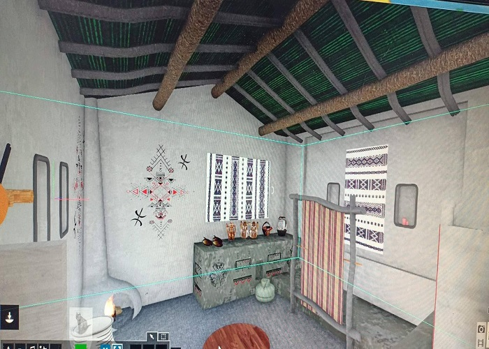

Création d'une animation 3D d'une maison Kabyle.
À la fin de paléolithique vers -10 000, l’Homme commence à s’enraciner. Ce processus débute avec l’invention de l’agriculture, il se caractérise par l’adoption des groupes humains d’un mode de vie sédentaire, qui se manifeste par l’établissement permanent dans un habitat occupé en continu.
Pendant cette période, les Hommes fondent les premiers villages et développent de nouvelles activités, comme l'élevage d'animaux et la culture du blé. Ils ne chassent plus pour survivre, ils deviennent des paysans. Ils construisent des maisons solides, en bois et en terre. Plusieurs familles y habitent ensemble. Des grottes d’Afalou, de Gueldaman aux maisons Kabyles traditionnelles (Tazeqqa), nos ancêtres se sont sédentarisés bien avant les autres peuples en constitution et le climat tempéré à nettement jouer à leur faveur. Tazeqqa est la chambre commune où toute la famille se réunit, surtout durant les nuits d’hiver. C’est une banque de connaissance de par son architecture, son ornement et la répartition des espaces entre les humains, le bétail et les réserves. C’est pourquoi nous, Tarwa n dda Lwennas, dans le cadre de l’économie de la connaissance avons voulu rendre à la maison Kabyle ses lettres de noblesses, par la réalisation d’une animation 3D de son architecture intérieure. Cette animation est le résultat de 3 mois de travail, de concertation et d’échange, qui vous offre la possibilité d’où que vous êtes à travers le monde de plonger dans cet environnement de connaissance et de partage.
Galerie Photo